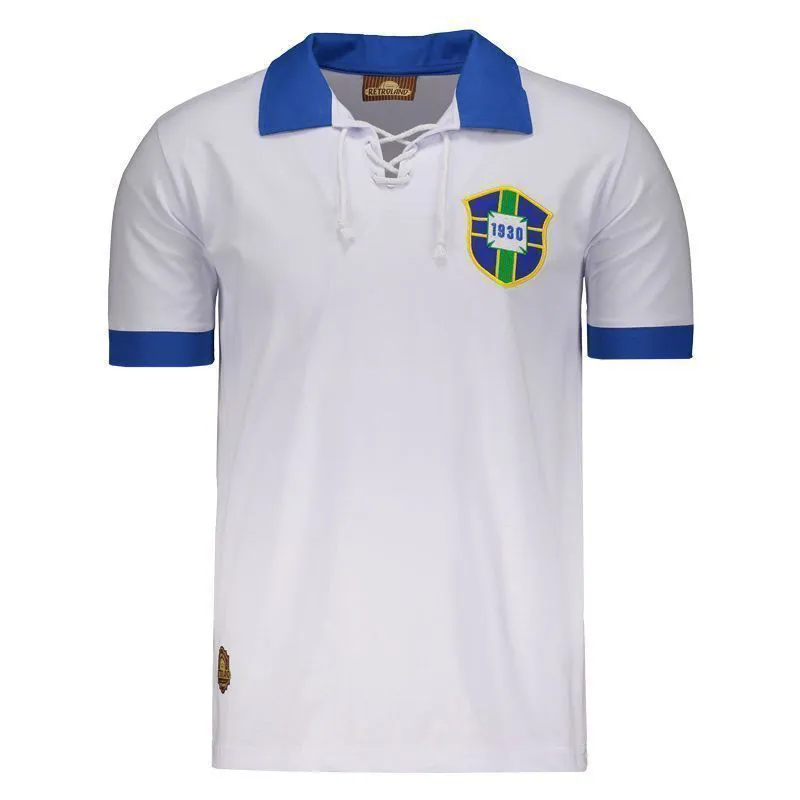

Seleção Brasileira usando a camisa branca na Copa de 1950
Antes da famosa camisa amarela, o Brasil jogava com uma camisa branca com detalhes azuis. Essa foi a camisa usada na final da Copa de 1950, no Maracanã, contra o Uruguai.
Após a derrota no episódio conhecido como "Maracanazo", a camisa branca passou a ser vista como azarada. Em 1953, foi feito um concurso para criar um novo uniforme, e nasceu a icônica camisa amarela com verde que conhecemos hoje.
O Brasil é a única seleção do mundo com 5 títulos da Copa do Mundo (1958, 1962, 1970, 1994 e 2002). Nenhum outro país alcançou essa marca.
O Brasil é conhecido mundialmente como o "país do futebol", não só pelos títulos, mas também pelo estilo de jogo ofensivo e criativo, chamado de futebol arte.
A Seleção Brasileira é a única que participou de TODAS as Copas do Mundo desde 1930.
Pelé é o único jogador da história a conquistar 3 Copas do Mundo (1958, 1962 e 1970), sendo considerado por muitos o maior jogador de todos os tempos.
Neymar é o maior artilheiro da história da Seleção Brasileira, superando Pelé. Mesmo assim, muitos torcedores ainda discutem essa marca por causa das diferenças de época.
Na Copa de 1970, Jairzinho marcou gol em TODOS os jogos do Brasil. Até hoje, nenhum jogador repetiu esse feito em uma campanha campeã.
Apesar da fama ofensiva, o Brasil teve grandes goleiros como Taffarel (1994), Marcos (2002) e Alisson, referência atual da posição.
Em 1950, o Brasil perdeu a final da Copa do Mundo para o Uruguai no Maracanã lotado. O silêncio no estádio marcou a história e influenciou até a mudança da camisa branca.
Em 2002, Ronaldinho Gaúcho marcou um gol histórico contra a Inglaterra de muito longe. Até hoje existe a dúvida: ele quis chutar ou cruzar?
Cafu é o único jogador da história a disputar 3 finais seguidas de Copa do Mundo (1994, 1998 e 2002), sendo campeão em duas delas.
Mesmo sem ganhar a Copa, o time de 1982 é considerado um dos melhores da história, com um futebol bonito e ofensivo que marcou época.
Em 2014, o Brasil sofreu a maior derrota de sua história ao perder por 7x1 para a Alemanha em casa, na semifinal da Copa do Mundo.
O uniforme azul surgiu na final de 1958 porque a Suécia também usava amarelo. A escolha foi inspirada no manto de Nossa Senhora.